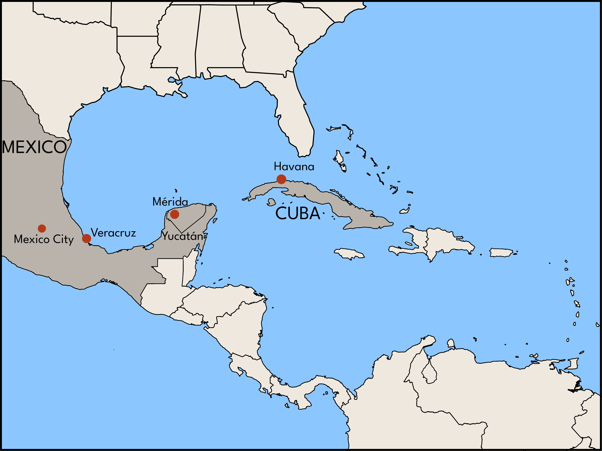

Q: How did the bolero move from Cuba to Mexico?
A: The recording industry helped genres hop national borders within Latin America.
Since the early record industry was dominated by U.S. capital, it's tempting to imagine that its only globalizing effects were to bring foreign music to the U.S. and American music to the world. But records also promoted musical border crossing and cross-fertilization within Latin America.

In addition to recording local music of interest to consumers in specific national markets, Victor, Edison, and Columbia also sought out Spanish-language genres that would appeal to a broader Latin American audience. The tango was their first attempt along these lines. Already a huge fad in Paris and New York, the genre had broad appeal. As early as 1915, for example, nightclubs in Colón, Panama featured "Argentine tango" alongside Caribbean and American dance music. After 1917, when Carlos Gardel's version of "Mi noche triste" inaugurated the genre of "tango song," stars like Gardel were marketed throughout the Spanish-speaking world. Victor had one of its Argentine artists, Rosita Quiroga, record a distinct repertoire of tango for export to Chile and elsewhere in the region. For these records, Quiroga sang tangos that avoided the use of Argentine slang (called lunfardo), and she sang to a more regular rhythmic accompaniment that would be more accessible to listeners who were not as familiar with the genre.
If the secret to building a Latin American market lay in producing tango that sounded less overtly Argentine, then the record companies could just as easily do that in the United States. The companies had discovered that they could use immigrant musicians to make records that would satisfy the demand for ethnic music of all kinds. They now applied this same approach to the tango. Throughout the 1920s, both Victor and Columbia recorded tangos in New York, sung in Spanish by classically trained, non-Argentine artists. These records sounded quite different from the tango recorded in Buenos Aires – compare Carlos Gardel's "Mi noche triste," at right, with the version recorded for Victor in 1925 by the Mexican operatic tenor, Carlos Mejía. Nevertheless, these "American-made" tango records helped the genre achieve popularity throughout Latin America .


Both record company executives and Latin American intellectuals tended to associate genres with specific nations, but the tango phenomenon shows that market forces sometimes pushed genres across national borders. Colombian intellectuals, for example, hoped to make the bambuco, a genre native to the country's Andean region, into a symbol of the nation. However, in the mid-1920s, Colombian recording artists, such as the duo Jorge Añez and Alcides Briceño began to record tangos as well. At right, compare "Ya ves," the bambuco they recorded in 1922, with the tango "Sufra," which they recorded a couple years later. "Sufra," composed by the prominent, Argentine tango bandleader Francsico Canaro, had been recorded the previous year by Victor's International Novelty Orchestra, conducted by Nathaniel Shilkret. A tango originally created for Argentine audiences was thus re-recorded by American and then Colombian musicians for export to the rest of Latin America. Note how the version by Añez and Briceño clearly emphasizes the habanera rhythm for the benefit of inexpert dancers.
In Mexico, the popularity of the tango overlapped with the rising influence of the bolero, a genre imported from Cuba. The bolero was a song style created by itinerant musicians – or trovadores – in nineteenth-century Santiago, on the far eastern side of the island, and typically performed by guitar-playing vocal duos. The style featured romantic lyrics and the five-beat Afro-Cuban rhythmic cell known as the cinquillo. In the early twentieth century, many musicians from Santiago migrated to Havana, where they often found work in the popular theatre. The bolero was quickly adopted by musicians and listeners in the capital city and soon aroused the interest of recording companies. At right, you can hear "Boda negra," a bolero recorded in 1919 by the Cuban duo of Floro Zorrilla and Miguel Zaballa; note the repeated cinquillo pattern played on the guitar.
The bolero arrived in Mexico via the port city of Veracruz and the Yucatán, two places with a history of cultural interaction with Cuba.

In Veracruz, the bolero thrived alongside the danzón, a Cuban dance genre that was also based on the cinquillo. But in the Yucután, the bolero was king; Yucatecan musicians, such as Guty Cárdenas, imbued the genre with local romantic traditions and softened its Cuban rhythms. Cárdenas, from an upper-middle class family in Mérida, enjoyed local success before moving to Mexico City in 1927. Within a couple years, he relocated to New York and became the Mexican music director for Columbia Records, a position that enabled him to further popularize the bolero.

The bolero became the soundtrack of modern, urban Mexico in the late 1920s, when it was embraced by musicians in the capital city, most famously Agustín Lara, a pianist who composed and performed in a number of genres, including the tango. Lara became a professional musician during the period of intense nation building that followed the Mexican Revolution (1910-20), when intellectuals and politicians hoped to enshrine rustic genres such as mariachi and son jarocho as symbols of mexicanidad. Yet Lara rejected these nationalist genres. Mexico City was undergoing profound transformation as rural migrants poured in, pushed from the countryside by the turmoil and destruction of the Revolution. Lara and other musicians found the tango, with its modern sound and its tales of betrayal and doomed cross-class love affairs, much better suited to the times.
In the boleros of Guty Cárdenas, Lara heard something similar, although perhaps with a more Mexican attention to melody. He ditched the tango for the bolero, transforming it by replacing the guitars, associated with the more traditional music of the countryside, with the more urbane piano. By combining sophisticated, urban elements with popular, rural ones, Lara created boleros with powerful, cross-class appeal. At right, hear an early recording by a female vocal trio of one of Lara's most famous boleros. While the tango would remain a popular foreign import in Mexico, the bolero became quintessentially Mexican. By agressively marketing music across national borders and by encouraging the pursuit of up-to-date, modern sounds, the recording industry had helped make this possible.
In subsequent decades, the film industry would further extend these processes. Carlos Gardel made a series of Spanish-language films for Hollywood studios in the early 1930s, making him a huge star across Latin America and ensuring the popularity of the tango throughout the next decade. When Mexico's film industry took off in the 1930s and 1940s, it had a similar impact, cementing the prominence of the bolero in Mexico and beyond.
To learn more:
- Adela Pineda Franco, "The Cuban bolero and its transculturation to Mexico: The case of Agustin Lara," Studies in Latin American Popular Culture (1996).
- Mark Pedelty, "The Bolero: The Birth, Life, and Decline of Mexican Modernity," Latin American Music Review, 20:1 (1999), 30-58.
Find even more on this topic in our bibliography.